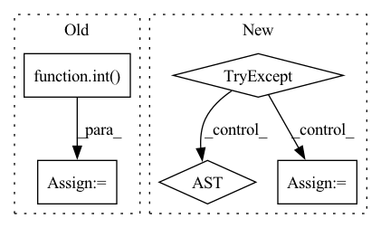

Pattern ID :8053
Before Change
def num_available_cores(verbose: int = 0) -> int:
if "LSB_DJOB_NUMPROC" in os.environ:
ans = int( os.environ["LSB_DJOB_NUMPROC"])
if verbose > 0:
print(f"LSB_DJOB_NUMPROC is found - extracting availables cores num from it. Available cores = {ans}")
return ans
After Change
def num_available_cores(verbose: bool = True) -> int:
if hasattr(os, "sched_getaffinity"):
try:
ans = len(os.sched_getaffinity(0))
if verbose:
print(f"num_available_cores:: spotted affinity which restricts available cores. Returning {ans} cores")
return ans
except Exception:
pass
ans = os.cpu_count()In pattern: SUPERPATTERN
Frequency: 3
Non-data size: 5
Instances Fragment ID: 28569893
Project Name: biomedsciai/fuse-med-ml
Commit Name: df3a7d8ac0c13f49d8b8322ef338f5f592785ca3
Time: 2023-04-03
Author: yoelshoshan@gmail.com
File Name: fuse/utils/multiprocessing/helpers.py
M Class Name: AnonimousClass
N Class Name: AnonimousClass
M Method Name: num_available_cores(1)
N Method Name: num_available_cores(1)
M Parent Class:
N Parent Class:
M File Name: fuse/utils/multiprocessing/helpers.py
N File Name: fuse/utils/multiprocessing/helpers.py
M Start Line: 8
M End Line: 14
N Start Line: 8
N End Line: 20
Before Change
quantiles = self.quantiles
samples = y_pred.size(-1)
quantiles = torch.stack(
[torch.kthvalue(y_pred, int( samples * q) , dim=-1)[0] if samples > 1 else y_pred[..., 0] for q in quantiles],
dim=-1,
)
return quantilesAfter Change
if quantiles is None:
quantiles = self.quantiles
try:
distribution = self.map_x_to_distribution(y_pred)
quantiles = [distribution.icdf(quantile) for quantile in quantiles]
except NotImplementedError: // resort to derive quantiles empirically
samples = torch.sort(self.sample(y_pred, 1000), -1).values
quantiles = torch.quantile(samples, torch.tensor(quantiles), dim=2).permute(1, 2, 0)
return quantiles Fragment ID: 28569876
Project Name: jdb78/pytorch-forecasting
Commit Name: d96465c514b8bf280fae33f0def40fffb62467dd
Time: 2021-04-11
Author: beitner.jan@bcg.com
File Name: pytorch_forecasting/metrics.py
M Class Name: DistributionLoss
N Class Name: DistributionLoss
M Method Name: to_quantiles(3)
N Method Name: to_quantiles(3)
M Parent Class: MultiHorizonMetric
N Parent Class: MultiHorizonMetric
M File Name: pytorch_forecasting/metrics.py
N File Name: pytorch_forecasting/metrics.py
M Start Line: 944
M End Line: 950
N Start Line: 945
N End Line: 953
Before Change
item_id = item_id[len(item_id.split("/")[0]) + 1:]
bbox_count = lines[image_id + 1]
bbox_lines = lines[image_id + 2 : image_id + int( bbox_count) + 2]
for bbox in bbox_lines:
bbox_list = bbox.split()
if 4 <= len(bbox_list):After Change
items[item_id] = DatasetItem(id=item_id, subset=self._subset,
image=image_path, annotations=annotations)
try:
bbox_count = int(lines[line_idx + 1]) // can be the next image
except ValueError:
continue
bbox_lines = lines[line_idx + 2 : line_idx + bbox_count + 2] Fragment ID: 28569892
Project Name: openvinotoolkit/datumaro
Commit Name: 22728f23e850b31562cdb5da80cd34722a091574
Time: 2021-03-19
Author: maxim.zhiltsov@intel.com
File Name: datumaro/plugins/widerface_format.py
M Class Name: WiderFaceExtractor
N Class Name: WiderFaceExtractor
M Method Name: _load_items(2)
N Method Name: _load_items(2)
M Parent Class: SourceExtractor
N Parent Class: SourceExtractor
M File Name: datumaro/plugins/widerface_format.py
N File Name: datumaro/plugins/widerface_format.py
M Start Line: 68
M End Line: 115
N Start Line: 69
N End Line: 100